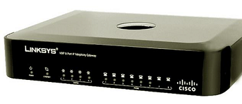

CMSI 1900:
Introduction to Networking for Fun and Profit
Tonight's Class Agenda
- Introduction — The Internet
- Client/Server
- Network Protocols
- Packets
- Internet and Network Addressing
- Hardware
- Commands
Introduction — The Internet
OK, we all know what the Internet is, right? It's typically considered a As it turns out, the Internet [with the uppercase If you think of the name as a combination of two words, |

|
Client/Server
If the Internet is just a big collection of stuff, we can sort of think of it like a restaurant. When I go in to get something to eat, I sit down at a table, the server comes over and asks what I'd like. I tell them my preference, then they go off to the kitchen to place my order. When the order is ready, the server brings it back to me and I get to chow down on green eggs and ham or whatever.
The analogy with the way the Internet works, called the client/server model, is very
much the same thing. The computer terminal would be the client [me, the hungry customer], with the
Internet hardware and software being the server
[we'll see a slightly different version of this
in a minute], and the kitchen [the remote site] is where my data [food] is kept.

|
Follow |
Remember there's a whole bunch of actions that happen behind the scenes here in this drawing, like address translation, routers sending things to other routers, packetizing of the data, looking up where the specific data is located, and on and on and on. Still, this diagram gives you an idea of what happens when you want to visit www.lmu.edu.
To illustrate the idea of client/server, let's try an experiment with the joke Knock-Knock
. As
you may remember, the joke goes:
First person: Knock Knock
Second person: Who's there?
First person: Boo
Second person: Boo who?
First person: Why are you crying?
In this case, I have constructed [thanks to the
Oracle Java
Examples website] a client/server application which does the joke and illustrates the idea. The
server program, along with an associated Protocol
class, handles the joke part, taking the
place of the first person above, and the client program, which takes the place of the second person in
the process and is run separately. The Java code is available on my GitHub repo at:
this link — feel free to download copies of
the code if you have Java installed on your computer. I will try to run the server on my computer and
have one or more of you run the client and connect to run the joke simulation. [Hope it works!]
In this simulation, the server starts things off when it gets a connection from the client, by responding
to the connection from the client with the message "Knock knock" that will show up on the client's
display. The client then must type "Who's there?" on the line and press enter, so the server will get
thatas its response. The server then replies to the client with a random selection from a table of
possible joke lines, and the process continues like that until the joke completes. Once the punch line
of the joke appears on the client's display, the server asks Do you want another? (y/n)
to see
if the client wants another joke.
[The server program has two parts because one part ~ KnockKnockServer.java ~ handles the
connection and the other part ~ KnockKnockProtocol.java ~ handles the messages and the
state
of the joke progress.}
Internet and Network Addressing
How do the computers know were to 'go' to get the information? Think of it like the Amazon driver who is delivering a package. She needs to know an address where she can drop your package off on the front porch, right? That address is how she knows she has the right house. Network addresses serve the same function, but in both directions — giving the client an address of the server which holds the information, and giving the server the address of the client to which the information should be returned.
Network addresses are made up of four numbers, each of which has 8 bits. That makes up the 32-bits of
the source and destination address fields in the header. You are probably familiar with them, even if
you didn't know that's what they are. They look like 192.168.123.234. Each number
in the series is made up of one 8-bit value, which is why each number is sometimes referred to as an
octet [oct
means eight
]. The numbers translate to networks and to
sub-networks and sub-sub-networks, so that the hardware [and software] which is in between the two
end points can tell what the route should be to get the information
packet to its destination. We'll learn about 'packets' next.
From the machinery standpoint, it is easy for them to pick the values apart, look up in a table to see what the next step in the route would be, and send the packet along to that next address in the chain. This is what network routers do. However, it is much harder for humans to be able to remember specific number sequences of numbers like thise. For example, what if every time you wanted to view the LMU home page, you had to type the number sequence 52.38.76.44? Or to get to Google for an Internet search, which would be a different set of numbers [172.217.10.142]?
Fortunately, there are two organizations that help out here. First of all there is the the Internet
Corporation for Assigned Names and Numbers [ICANN] which is a non-profit
organization that assigns the names to the network address octets. You pay a fee to own the name.
Names are registered and are called domains or domain
names. For example, the address 52.36.76.44 is registered with the ICANN for the domain
lmu.edu
.
The second organization is related to the name translation that happens so
that humans can remember the names rather than the number sequences. The Domain Name System
[DNS] performs the translation based on the approved names from the ICANN. It is essentially
a series of computer servers with big look-up tables that match the names that have been assigned to
the numeric addresses to which they translate. This look-up occurs behind the scenes
within the
web browser application, so you never have to be aware it's happening [unless something goes wrong].
Remember: EVERY device that is connected to the Internet needs an IP Address. Otherwise this system won't work! If YOUR computer didn't have an address, you could send a message to a remote computer [like www.lmu.edu] to get their web page, but the LMU server wouldn't know where to send the page back to you. On the other hand, if the LMU server didn't have an address, NO ONE would know how to connect to it to get information!
[BTW, you can look up the numbers for any domain name if you want, by visiting the DNS Lookup site which is maintained by the DNSLookup Organization for just such a purpose.
Packets
So, how does any computer know which computer to talk to on the other end of the connection? It's all done with the idea of addresses, specifically TCP/IP addresses.
When you order a package from Amazon, you must give them a delivery address, so that they know where
to ship your merchandise, and so that FedEx knows onto which truck to put it and what street and house
at which to drop it off. Your house has a street address that is useful for that kind of situation.
In the same way, every device that is networked has a network address which uniquely
identifies that device on the network. Going back to the diagram above, when the user enters a web
address like https://myweb.lmu.edu
to visit a page on the Internet, the web browser breaks the
request message into small chunks called packets which are sent over the network to
the server. On the server end, the packets are put back together to form the complete message again.
Inside each of those packets are TWO addresses: 1) the address of YOUR computer; and 2) the address of
the SERVER computer that the request is destined to reach.
Each packet resembles the following:

As you can easily see, there is a BUNCH of stuff that is added to your data when you send it across a
network. The black box marked USER DATA
is the actual data that is being sent. However, as it
moves through the system, there is another set of data added, called a header, which
creates the packet and contains information needed to properly transmit and receive
that information. The first header that is added is put on by the Transport layer of
the system [we'll see that later] and makes the user data into a TCP Segment.
The second header that is added is done by the Internet layer and makes the packet
into an IP Datagram by adding the IP Header
. Finally, the last header added
is done by the Network Access layer adding the network header
so that the whole
message is now called a Network-level Packet. It is this packet that is sent along
the transmission medium to the other end of the connection.
Just for information so that you can see what is typically in a header, you can see on the right that there are a number of fields, made up of specific bytes of information to assist with the transmission. A few fields in this diagram show you the point of packets. First, the version and the header length fields make sure that all the devices in the chain know what protocol version should be used, and how many bits to allow for in this packet. Next, look at the fields called source address and destination address. Notice that these are 32-bit values. We'll see more about addresses in a minute. Also note the identifier and fragment offset fields which help the other end reassemble the packets into the message that started out. Since it is not guaranteed that all packets will be sent through the exact same network path they may arrive at the destination out of order if one path takes longer than another. Finally, notice that packets are small, meaning you can send a LOT of different packets from
MANY different sources to MANY different destinations, since their small size helps let the
network mingle them together so that |

|
The OSI and TCP/IP Network Stack
Models
There are a number of layers of software and firmware that assist with network communications to make sure that the messages get where they are going. At the top there is the application that is working on your local computer to send/receive the message; this might be your web browser application, for example. At the bottom is the actual transmission medium which carries the signals that move the data from one machine to the other. In between though there are a number of other layers which have specific jobs in the process. There are two views of these layers; each view actually is just a model of the overall process with some of the functionality at specific layers either combined or separated for clarity of the model. One of these is called the OSI 7-layer model, and the other is the TCP/IP 4-layer model.
Note that the TCP/IP model has the same functions as the OSI model, but they are grouped differently. For this reason, we'll look at the OSI model first, then define the TCP/IP model in terms of it.
The OSI model layers do the following:
|

|
By comparison, notice that in the diagram below, the right side has the TCP/IP model and how its layers equate to the OSI model. Two of the layers, the Transport layer and the Network layer, are the same. However, the other layers in the TCP/IP model are basically aggregates of the corresponding layers in the OSI model as you can see by the colors. The functions that are performed in those aggregated layers are [essentially] identical, but the MODEL is different. |
Network Protocols
Network addresses in the browser are known as Uniform Resource Locators [URLs] and
they have specific parts that mean things for how the file you are interested in can be found. The
URL starts out with a protocol indicator which tells what type of communication will
be used. This is what comes before the ://
in the URL line. Next comes the web
address which includes the domain of the server that is providing the information, i.e.,
www.lmu.edu
or www.mozilla.org
. After that comes a slash character, which is used as a
separator, and then the directory path on the server which contains the file.
For example, lets consider if we wanted to get a page called woof.html
which is located in the
file path directory1/directory2/subdirectory/longpath
on the server in the domain blah.gov
.
To find this file we would need to get the URL line to say:
https://www.blah.gov/directory1/directory2/subdirectory/longpath/woof.html
There ARE some nice shortcuts to this, for example, if the main page on a site is named index.html
,
you don't have to type that, it will come up by default. Likewise, modern browsers know to put the WWW
on the front if you leave it off, so you only need to type in google.com
to get the search page.
The first part of this, the protocol
part, tells the communications channel how to communicate
over the network. The word protocol really just means an agreement, sort of
like a contract between the two ends that says here's how we'll do this transfer thing
. There are
many different types of protocols. Some of the familiar ones are http, https, ftp, telnet, ssh, tftp,
smtp, and of course TCP and IP which are usually seen together as TCP/IP.
Hardware
There is a significant amount of hardware that is required to support network operations. We usually
don't notice it, because it is infrastructure
and is not in front of our faces the way our
computers and screens are, but without it, we would not be able to watch Tik-Tok videos or stream our
favorite NetFlix shows.
As an analogy, think about roads and bridges and tunnels that facilitate our physical transportation. We rarely think about them, we just use them. But without them, we'd get nowhere.
With networking, as with so many things in computer science, there are levels of
infrastructure that form a hierarchy. The first thing in this chain is your computer itself.
Every computer [or other connected device] has hardware that helps the machine connect to the
network. It can be wireless, so that the connection isn't a physical The lowest level device on a network is called a hub. This is a device
that takes a cable which |
The next-higher-level device is called a switch. A switch is like a hub, but instead of sending all the message packets to all connected devices, the switch has internal software [called firmware] that can examine each packet as it arrives and only forward it on to the specific device to which is is destined. An unmanaged switch has no configuration options, it is the simplest version. A managed switch has the ability to be configured to modify its operation to do things like set bandwidth, reject certain port destinations, activate or deactivate ports on the device, or set up Virtual Local Area Networks [VLANs]. The switch uses the concept of packet switching to receive and forward data. Moving up the hierarchy, we next meet the router. A router is like a switch on steriods. Routers have the ability to determine not only which computer a message should be sent to, but also has the ability to determine the next link [also called a hop] to get to that link. This is done by the use of a look-up table in the memory of the router. You will be familiar with routers from your home network, in which the router is the distribution point for messages coming in from your Internet Service Provider [ISP] to get them to the devices on your home network. [BTW, your home network can be thought of as a Local Area Network [LAN].] |
A bridge is like a Finally, we have the gateway, which is like a bridge, but this time the networks that are being connected do NOT need to use the same protocols. It is the entry and exit point to a network and controls access from that network to any other network. |
 |
Network Commands
One of the most useful commands in the network arsenal is the lowly ping command. If
you type that word onto the command line, you can see if there is a connection path from your host to
a remote host. Fortunately, ping [in most cases] can figure out the DNS stuff so you can use domain
names rather than numbers, but numbers work, too! There are a ton of command line switches that you
can use to find out lots more information. Try using man ping
on mac or ping /?
on
windows to get the full details. Note that the command works a little differently on the two platforms
– on windows, ping will send four messages to the remote host and then stop, while on a mac it
will keep sending until you use control+C
to make it quit.
[ping demonstration goes here]
Another useful command will help you get configuration and some status information about your network adapter on your host. On windows, you can use ipconfig /all to see a ton of stuff including your mac address, your main IP address, IPv4 information, IPv6 information, any virtual network adapters information, wireless configurations, DNS lookup hosts, and more. On mac, you use the command ifconfig -a to get that kind of information.
[ipconfig demonstration goes here]
A third handy-dandy tool is netstat, short for network status
. In this case,
the same command will work for either platform, but they operate quite differently. On mac, you have
a large number of command line switches that limit or expand the information you'll get displayed.
Take a look at the netstat man page to see what I
mean. On windows, the default simply gives you a list of four columns that include the protocol, the
local address, the foreigh address, and the state for each connection. The windows version can be
slow, too, if some of the connections have been put into the "CLOSE_WAIT" state – for those, the
connection has to time out before it returns and the entire program must wait for each response. Still
it is a handy command to have to see addresses and port numbers that are active on the network. You
also get information about other devices that are connected, like printers, chromecast devices, and so
on. Nice to use if you suspect there are unauthorized devices that are connected to your wireless
network without permission!
[netstat demonstration goes here]
As stated before, to communicate with each and other computers need a unique address. A computer name, called a hostname is assigned to help lend a human-understandable name to each one. Hostnames can be alphabetic or alphanumeric, and can contain specific symbols used to define an individual node or device in the network. Fortunately, the command is the same as the information it returns: hostname. Also fortunately, the command is the same on both platforms.
[netstat demonstration goes here]
Check out the tracert command, too! This one [short for trace route
] will show
you the number of hops [meaning the number of independent devices] the message goes through to reach
the other end of the connection. There are a few options to this one, but not too many…
[tracert demonstration goes here]
The nslookup command [which stands for name server lookup
] is a utility used
to obtain information about internet servers. It provides name server information for the Domain Name
System [DNS] i.e. the name and IP Address of the default DNS server.
[nslookup demonstration goes here]
Another useful command is the route print command, which you can use to display your computer's internal routing table. Be careful with this one, though, because there are options to modify the table as well, and you don't want to accidentally change some configuration and mess things up!
[route print demonstration goes here]
Finally, there is the ARP command. ARP stands for Address Resolution Protocol. Although network communications can readily be thought of as an IP address, the delivery of a packet depends ultimately on the Media Access Control [MAC]. This is where the protocol for address resolution comes into effect. You can add the remote host IP address using the arp -a command in case you have issues communicating with a given host. The ARP command provides information like Address, Flags, Mask, Interface, Hardware Type, Hardware Address, and more.
[arp demonstration goes here]